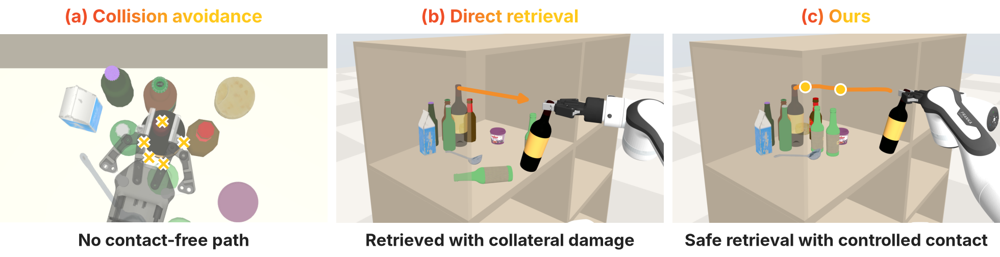
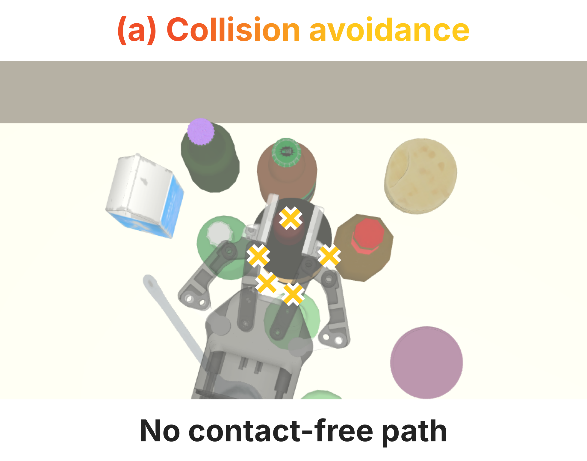
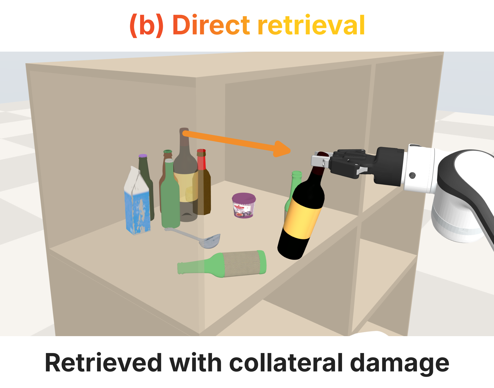
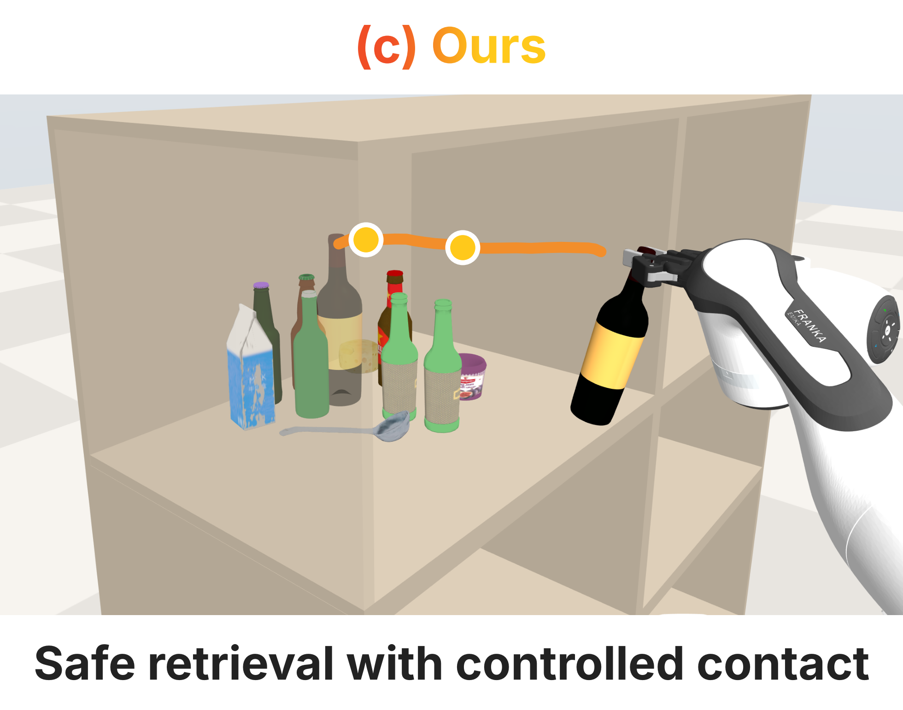
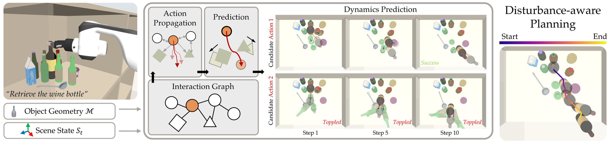
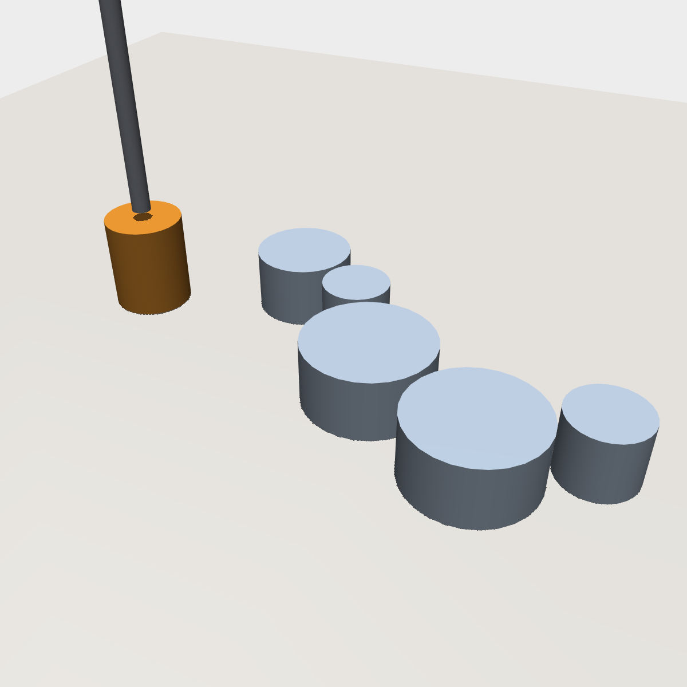
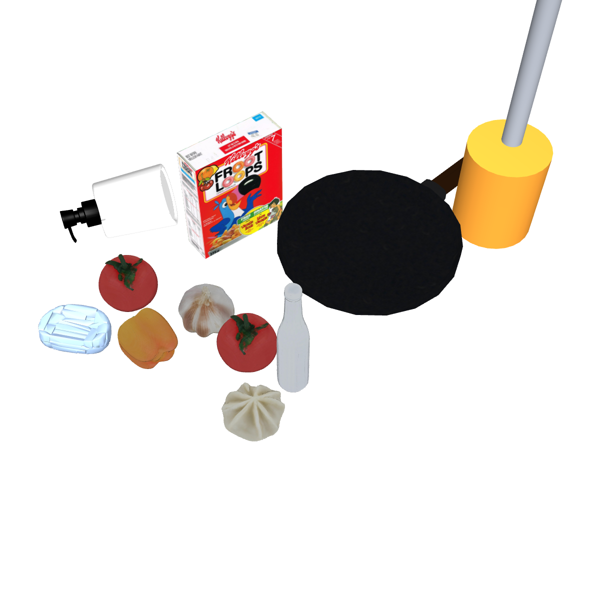
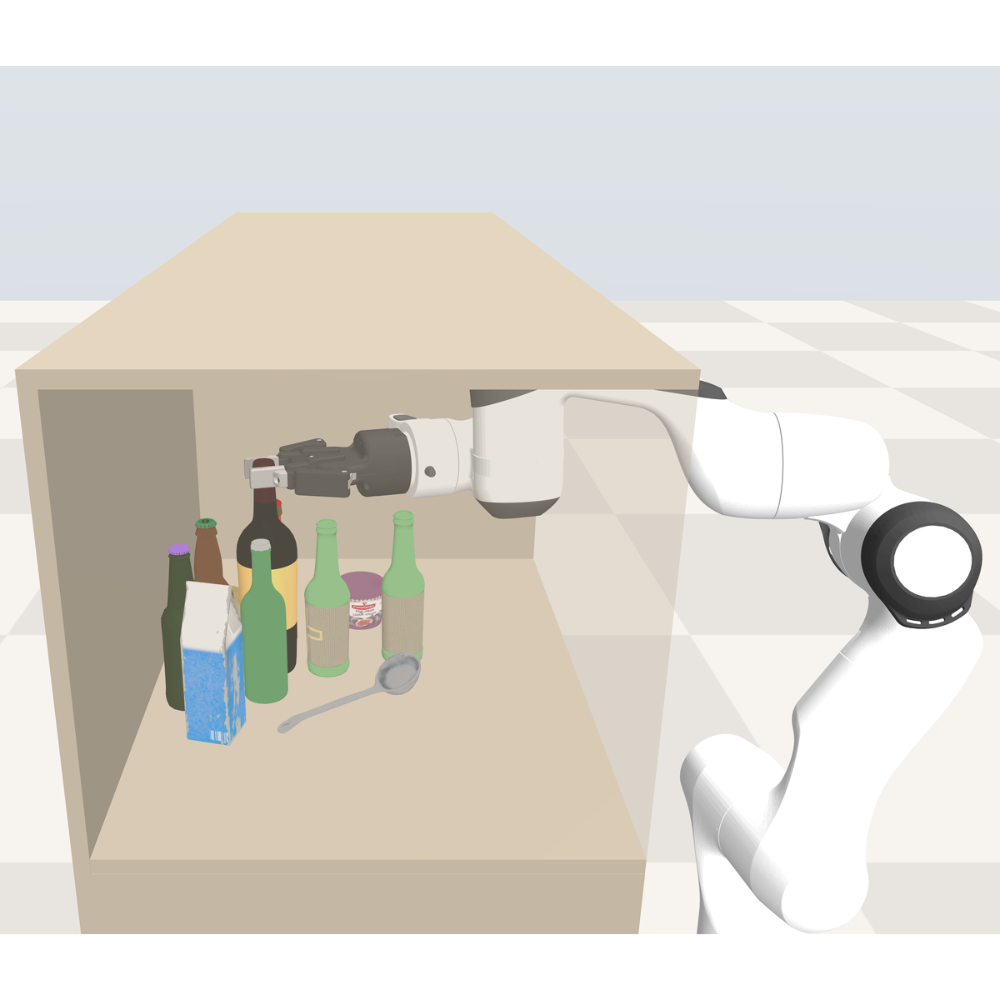
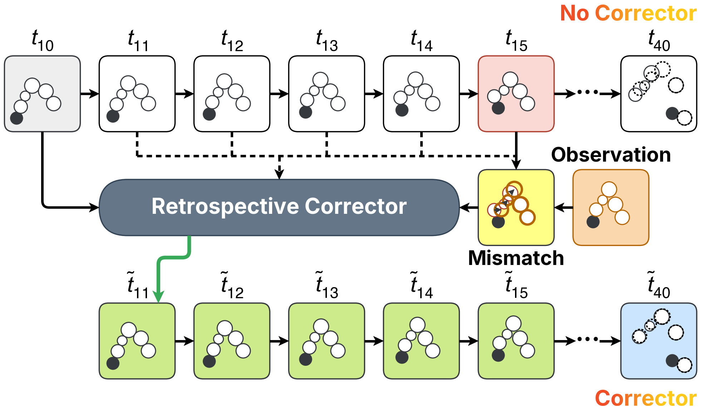
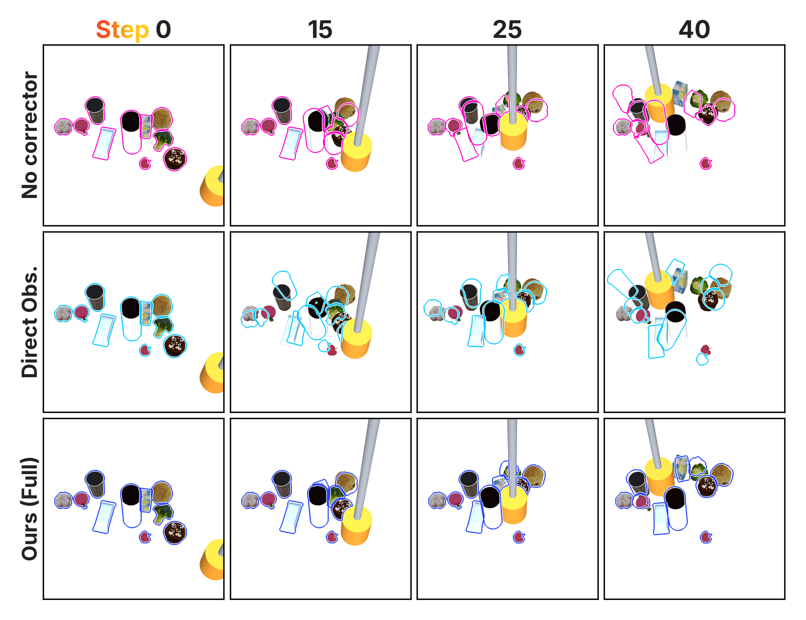

Abstract
Retrieving objects from densely packed storage requires anticipating how contact disturbs surrounding objects when limited clearance prevents lifting the target over clutter. However, contact can propagate beyond the target’s immediate neighbors, while accumulated prediction errors make learned dynamics unreliable over long planning horizons. We introduce DARE (Disturbance-Aware REtrieval), a geometry-aware relational dynamics framework that uses retrospective correction to improve long-horizon prediction for disturbance-aware retrieval. DARE encodes compact object descriptors and predicts action-conditioned disturbance propagation through object-level message passing. When a sparse observation becomes available, a learned corrector uses the prediction discrepancy to amend an earlier predicted state and reruns the intervening dynamics, propagating the correction through the predicted contact chain. These predictions guide a receding-horizon planner that balances retrieval progress against displacement and rotation of surrounding objects, permitting necessary contact while discouraging harmful disturbance. Experiments in planar and RoboCasa environments evaluate long-horizon prediction, generalization, and robustness for disturbance-aware retrieval in dense clutter.
Highlights
Overview
Disturbance-aware retrieval




Method
Pipeline Overview

-
A
Problem Statement
A grasped target is retrieved from a densely cluttered compartment where limited overhead clearance rules out lifting, so retrieval requires contact that can displace, topple, or eject bystanders. The robot commands the target’s planar translation, tilt, and yaw, while bystanders move only through contact, whose dynamics are approximated by a learned relational model. The planner seeks motions that make progress toward the opening while limiting bystander displacement, tilt, and yaw.
-
B
Relational Dynamics Prediction
Each object is one graph node carrying its mass, inertia, and a learned descriptor of its convex collision pieces, so the graph size does not depend on mesh resolution. A propagation network passes messages along proximity edges rebuilt after every predicted step, relaying the target’s push through intermediate objects; compartment faces are static nodes, so object–wall contact uses the same computation. The command enters only on edges sent by the target, so indirect motion must be explained through relational paths.
-
C
Retrospective Correction from Sparse Observations
Autoregressive rollouts compound small pose errors, and in clutter a small error can shift a contact and change the whole disturbance cascade. Overwriting the prediction with a sparse observation copies sensor noise and leaves velocities incomplete; instead, a corrector reads the blind rollout and the observed pose discrepancy and amends the earliest predicted state. The dynamics are then rerun from the amended state, so the correction propagates through the contact history and a dynamically consistent state is carried into the next cycle.
-
D
Future-aware Joint Predictor–Corrector Learning
Predictor and corrector are trained jointly in one backward pass through the blind rollout, the amendment, and the rerollout. The corrected rollout is also scored beyond the observation, so an amendment is rewarded only if the future it produces stays accurate. The predictor thus learns rollouts whose errors are correctable from sparse observations, not only accurate on their own.
-
E
Disturbance-Aware Retrieval Planning
Rather than rejecting all contact, the planner scores the predicted consequences of each candidate motion and excludes candidates that exceed bystander displacement or tilt tolerances. Its cost trades the target’s progress toward the opening against bystanders’ displacement, tilt, and yaw; spline-shaped candidates are refined with MPPI-style weighting, and the lowest-cost admissible plan is executed. Each executed segment ends at the next observation, so every planning cycle is also a correction cycle.
Experiments
Experiments Setup



Dynamics Prediction
Retrospective Correction and Joint Training


Disturbance-aware Retrieval Planning
BibTeX
@article{anonymous2026backtothefuture,
title = {Back to the Future: Predicting Long-Horizon Dynamics with Retrospective Correction for Disturbance-Aware Retrieval},
author = {Anonymous},
year = {2026}
}